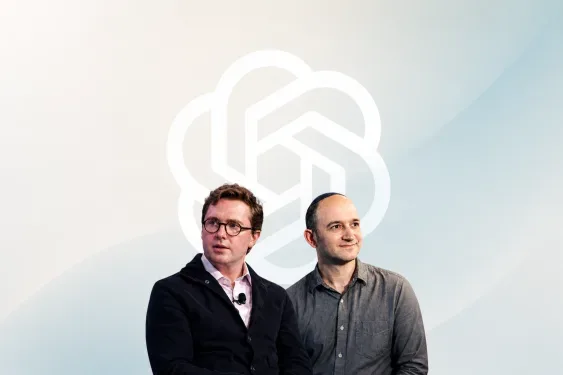
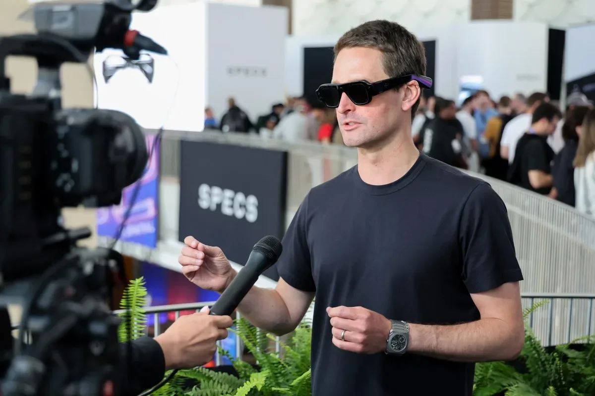
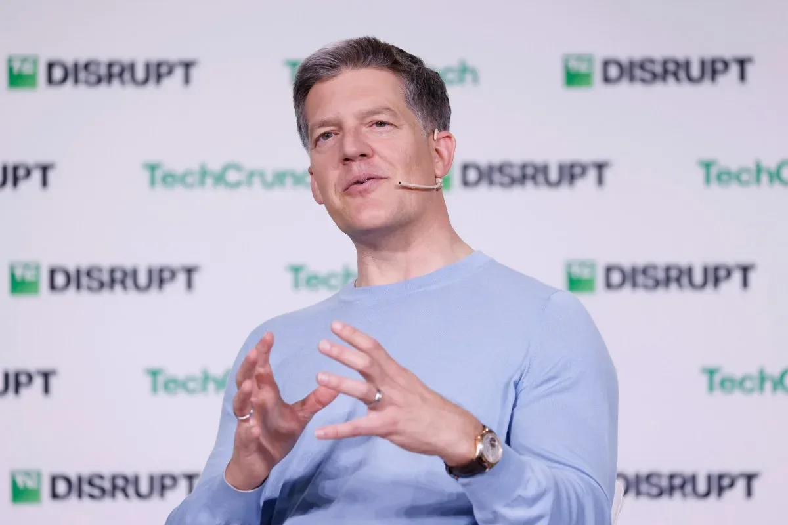
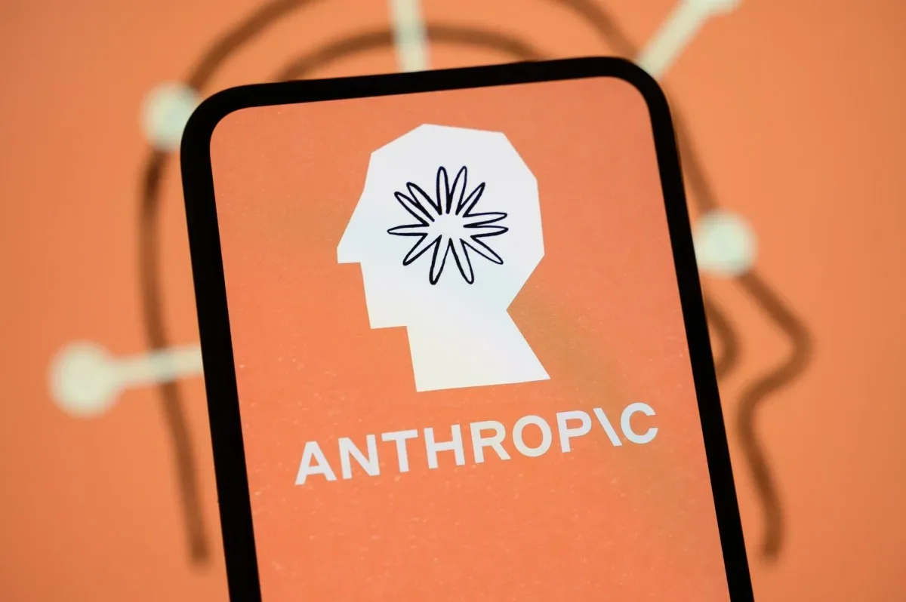

Индустрия
FERC предписал ускорить подключение дата-центров к энергосетям
FERC обязала операторов ускорить подключение дата-центров — расходы лягут на сами центры.
TechCrunch AI
18 июн.Материалы из источника TechCrunch AI.
104 материалов
FERC обязала операторов ускорить подключение дата-центров — расходы лягут на сами центры.

Amazon готовится напрямую конкурировать с Nvidia, предлагая собственные ИИ-чипы Trainium сторонним заказчикам.

Match Group выяснила, как одинокие американцы относятся к ИИ в свиданиях: 47% против, но 64% допускают помощь.

Техработники объединяются в super PAC, чтобы бороться с антирегуляторным лобби Big Tech — в предвыборной гонке уже $5 млн.

General Intuition, стартап по обучению ИИ-агентов, близок к привлечению $300 млн от Безоса и Шмидта.

Отправляйте друзьям живых AR-персонажей в iMessage — они видят мир через камеру и реагируют на вас.

Google Docs назойливо предлагает Gemini? Рассказываем, как убрать ИИ-подсказки и вернуть чистый интерфейс.
Партнер NEA Тиффани Лак — о том, как компании переходят от безудержного внедрения ИИ к контролю затрат.
G7 обеспокоен: США могут отключить ИИ-модели для союзников. Макрон и Моди призывают к гарантиям доступа.

После бума ИИ — проверка счетов. Как компании выясняют, окупаются ли инвестиции в технологии?

Snap выпустила AR-очки за $2200, рынок отреагировал падением акций.

Партнёр Sequoia с 25-летней историей отношений с Маском занял место в совете SpaceX
Google Home Speaker: первая колонка с Gemini, естественный язык и подписка

Новый опрос Pew Research: большинство американцев скептичны к ИИ, несмотря на рост использования ChatGPT до 44%.
Odyssey, основанный ветеранами беспилотных автомобилей, стал единорогом после раунда от Amazon и других инвесторов.
Threads, Instagram и TikTok дают пользователям ИИ-инструменты для настройки алгоритмов — от ползунков до приватных запросов

Anthropic вложилась в удаление углерода — первый климатический шаг компании на фоне энергетических трат ИИ-отрасли

Канадский пенсионный фонд ставит $741 млн на дата-центры Индии — вслед за Amazon, Google и Meta

Стартап поднял $27 млн, чтобы ИИ в праве и медицине перестал галлюцинировать

Кто будет собирать данные для роботов — и почему крупные лаборатории платят за это стартапу

iPod Shuffle как антидот смартфону: почему «медленные» гаджеты снова в моде

Поговорите с Pinterest: новое приложение для шопинга использует ИИ, чтобы понять ваш вкус.

DeepL купила Mixhalo: перевод речи в реальном времени теперь и на стадионах

Anthropic обогнала OpenAI по доле корпоративных расходов на ИИ в мае, несмотря на конфликт с властями

SpaceX ненадолго обошла Amazon по капитализации, достигнув $2,9 трлн, но затем акции скорректировались. Что стоит за взлётом?

Стартап Probably получил $9 млн на создание «экзоскелета» для LLM, который предотвращает галлюцинации и ошибки.

SpaceX дороже Amazon — и покупает ИИ-стартап Cursor за $60 млрд. Как это возможно?

Robinhood уволил 290 человек и не сослался на ИИ — пока все остальные именно так и делают

Plaud заработала $100 млн на ИИ-диктофонах без экрана — и половина пользователей платит

Минюст встал на сторону xAI в споре о турбинах, сославшись на военное использование Grok.